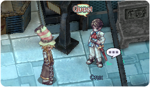
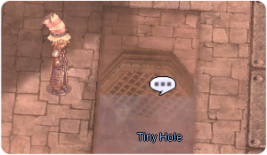
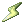

Terra Gloria
Jump to navigation
Jump to search
Terra Gloria
Search for Terra Gloria
| Requirements | |
|---|---|
| Base Level: | 100 |
| Starting Point: | |
| Prerequisite(s): | Ritual of Blessing |
| Rewards | |
| Experience: | 11,250,000 (Base) and 26,250,000 (Job) |
| Items: | 30  Schwartz's Honor Token Schwartz's Honor Token
|
- Go in the Prontera Castle and head to your room . Nyhill has been waiting for you and he asks you to wait for Spica.
- Once she arrives, speak with Spica. You learn that the chamberlain who gave the drink to Nyhill was from the Schwarzwald Republic.
- Speak with Nyhill again, he'll set up a meeting with Crux.
- Go see Crux in the Lighthalzen Airport . He suspects that the culprit's name is most likely Bruno.
- Search the north side of Lightalzen, near .
- Investigate the slums and speak with Bruno again . Crux apprehends Bruno and will interrogate him later.
- Head back to your room in the Prontera Castle and talk to Nyhill.
- Go to Yuno and enter the Yuno Airport. Crux will be waiting for you there. .
- 
- Go to the Lighthalzen Hotel and speak with Philofontes (at 2° floor, bottom room). You'll have to join the Rebellion Empire and defeat Luke.
- Go to Einbroch and head to the Train Station .
- Talk to the Unsual Person (Lazy) right next to you, it's the agent of the Secret Wings.
- Lazy doesn't want to pay the 200z train fee, so follow him near the sewer instead .
- Click the Very Small Hole to be transported to Einbech.
- 
- Speak with Lazy in Einbech . Follow his traces.
- Lazy will be waiting for you near , talk to him. You find a body and decide to carry him along to the Rebellion camp.
- Speak with Lazy again at the entrance of Clana Nemieri. Enter the portal afterwards.
- Speak with Lazy inside Clana Nemieri and a cutscene will trigger.
- Walk accross the corridor and speak with Lazy again . You'll trigger another cutscene and the negotations will begin.
- You'll have to start by speaking with Elena Bolkova . She will challenge you and you must defeat her.
- Speak with the Rebellion Leader on the second floor . He won't accept to cooperate with you, so you'll have to try to convince Dien.
- Enter the portal at and a cutscene will trigger. You'll be warped into Dien's room.
- Approach Dien to trigger the next cutscene. They will need some time to think about your proposal.
- Speak with Dien again.
- Speak with Commander Erst , she is at the top middle room. She agrees with Dien.
- Go back to the Rebellion Leader and speak with him.
- He wants Larcis to read the letter, so speak with Larcis right next to the Rebellion Leader.
- Speak with the Rebellion Leader again.
- Speak with Dien who just showed up.
- Speak with the Rebellion Leader and you will get 10 Schwartz's Honor Token.
You have now unlocked the Dien's Party quest. - Speak with Lazy inside Clana Nemieri and inform him about your success for the elders' cooperation. You will get another 10 Schwartz's Honor Token along with some experience.
You have now unlocked the Infiltrate Heart Hunter Base quest.
You have now unlocked the Rachel's Revolver quest.
You have now unlocked the Lebedev Twins quest.
You have now unlocked the Teleportation Prohibition quest.
You have now unlocked the Leaflets Delivery daily quest.
You have now unlocked the Luke's Requests daily quest.
You have now unlocked the Finding Charity daily quest.
You have now unlocked the Flower Girl daily quest.
You have now unlocked the Elena's Challenge daily quest.
You have now unlocked the Refreshments for the Elders daily quest.
You have now unlocked the Weapon Grudges daily quest.


Infiltrate Heart Hunter Base
| Requirements | |
|---|---|
| Base Level: | 100 |
| Starting Point: | |
| Prerequisite(s): | Search for Terra Gloria |
| Rewards | |
| Experience: | None |
| Items: | 10 Schwartz's Honor Token
|
- Speak with the Rebellion Soldier , Tess comes up and wants you to come to the Einbroch Hotel.
- To go to the hotel, use
@go einbrochand then simply walk to the right. The meeting is at . Speak with Nyhill inside the hotel room. - The operation base camp is North of Einbroch, at the northeast corner of the map . Speak with Julian and he tell him you're ready. You'll need to make a party for the Heart Hunter War Base 1 instance.
- Once you're ready, speak with Striker Unit Commander to get warped inside the Heart Hunter base.
Heart Hunter War Base 1
- Walk near Julian on your right to trigger a cutscene.
- Defeat the first wave of Heart Hunters on your right. Once you're done, Julian will reappear near the barricades (if you walk too close to the barricade you'll lose HP, you can't die, but be careful!).
- Walk near Julian to trigger the next cutscene. You'll have to find explosives.
- The explosives are north of the entrance (coordinate 58 88). Pick up the gunpowder that drops.
- You'll have to defeat another wave of Heart Hunters. Speak with Julian and give him the gunpowder to blow up the first barricade.
- Keep walking on the right and you'll find Julian again. Walk near him to trigger another cutscene.
- Walk north of the area and you'll find a Suspicious Instrument (coordinate 147 119). Push the button and defeat the new wave of Heart Hunters.
- Walk near Julian again and talk to him to trigger a cutscene. Go through the wall.
- Keep walking to the right until you find Julian again, walk near him to trigger a cutscene.
- Go back near the previous wall and defeat the intruders. A new Pile of Gunpowder will appear (coordinate 166 59), click on it, and pick up the items.
- Go back to Julian (on the right side) and give him the gunpowder.
- Walk to the right once more and go near Julian. A cutscene will trigger.
- Heart Hunter Ebel will appear, you do not have to kill her just run away until she dies. Wait for the animation to finish and then watch the cutscene.
- Speak with Julian to get out of the instance and you will receive 10 Schwartz's Honor Token.
You have unlocked the Heart Hunter War Base daily instance.

Continue with Infiltrate Heart Hunter Base
- Speak with Luke at the operation base camp to get warped inside the Heart Hunter base.
You have now unlocked the Chimera Research daily quest. - Go in the portal right up to you, to get inside the Werner Laboratory. Then walk towards Luke near and speak with him.
- Talk to him again to create the Werner Laboratory instance. Talk to the portal that appeared to go inside.
Werner Laboratory
- Speak with Eisen Werner at the entrance.
- Move forward and speak with him again at the end of the corridor.
- You'll have to active the Security Devices on each side of the room. If you pick the wrong answer, you'll have to start over with both devices.
Trick: just spam the first option, red is more likely to be the answer. - Enter the portal to go to the next area.
- Move up and speak with Eisen again. You'll have to active the two security devices on the sides once more.
- Enter the portal to go to the next area.
- Speak with Eisen again and you'll be teleported inside the core of the lab.
- Speak with Eisen again and watch the cutscene. On your first time, you will be teleported outside of the instance. You will also get 1 Small Leather Bag with 1
 Blessing Star.
Blessing Star.
You have now unlocked the Returning the Relics quest.
Continue with Infiltrate Heart Hunter Base
- With the Blessing Star in hand, go back to the Hotel Room in Einbroch .
- Speak with Nyhill and listen to the story. You'll be teleported to Prontera. Go back to the Prontera Castle inside your room.
- Speak with Skia Nerius. You will be rewarded with 10
 Honor Tokens.
Honor Tokens.
You have now unlocked the Pet Child quest.
You have now unlocked the YSF01 quest. - Speak with Philofontes at the Heart Hunter base . You will be rewarded with 10 Schwartz's Honor Token.
You have now completed the Terra Gloria main quest!
Lebedev Twins
| Requirements | |
|---|---|
| Base Level: | 100 |
| Starting Point: | |
| Prerequisite(s): | Search for Terra Gloria |
| Rewards | |
| Experience: | 7,500,000 (Base) and 7,500,000 (Job) |
| Items: | 10 Schwartz's Honor Token Unlocks the Entertain the Lebedev twins daily quest. |
- Speak with Elena Bolkova and select I am not busy today, so I stopped by and select that you can take a secret (first option). Then select I will help and accept to help her with the twins.
- Speak with Anya Levedeva and she doesn't want to speak with you anymore. You'll have to gather information from other members:
- Speak with Milo River near .
- Speak with Mason Bender near .
- Return to Anya and tell her what you've learned. When prompt a choice, choose to ask directly. She will get more upset and you'll have to ask Elena for help.
- Speak with Elena Bolkova and tell her about the Lebedev twins. She suggests to speak with Ericsson Adler instead.
- Speak with Ericsson Adler and he will give you
 Delicious Handmade Cookie to eat with the twins.
Delicious Handmade Cookie to eat with the twins. - Go back to Anya and ask her if she Want some cookie? (second option).
- Report what they've told you back to Elena Bolkova. She now wants you to bring them to her.
- Go back to Anya and tell her Elena wants to see them.
- Go back to Elena and tell her I have brought the Lebedev twins. You'll get a longer cutscene along with 10 Schwartz's Honor Token and some experience.
You have now unlocked the Entertain the Lebedev twins daily quest.
Teleportation Prohibition
| Requirements | |
|---|---|
| Base Level: | 100 |
| Starting Point: | |
| Items: | 4  Flame Hearts Flame Hearts4  Mystic Frozens Mystic Frozens3  Rough Winds 5  Great Natures Great Natures1  Star Crumb Star Crumb
|
| Prerequisite(s): | Search for Terra Gloria |
| Rewards | |
| Experience: | 3,250,000 (Base) and 3,250,000 (Job) |
| Items: | 10 Schwartz's Honor Token
|
- Speak with Arinoa Yurik and her brother will show up next to her.
- Speak with Arivero Yurik, he will need some to prepare.
Come back tomorrow after 4 am, server time. - Speak with Ariona and then Arivero. He will get a headache from thinking too hard and needs to rest.
- Speak with Arivero again. He will ask you to solve a 'mystery'. You'll have to select (one after the other):
- A strong wind.
- The turned-off torch.
- You will need 1 Flame Heart to break the Teleportation Prohibition magic device. Once you have the item, go to Einbech near the train at , Arivero will appear and you'll have to speak with him.
- Arivero now needs 3 Mystic Frozens for the Teleportation Prohibition magic device. Once you have the item, go back to him near the train in Einbech.
- Go back to Arinoa and then speak with Arivero inside Clana Nemieri. When asked, select Rough Wind.
- This time, Arivero needs 3 Rough Winds and 1 Mystic Frozen. Once you have the items, go to Lighthalzen and go in the garden near .
- Go back to Arinoa and then speak with Arivero inside Clana Nemieri.
- You will need 1 Star Crumb. Once you have the item, speak with Arinoa and then Arivero again. Select Ask him option.
- You will need 4 Great Natures. Once you have the items, go to Yuno and walk near these coordinates .
- You will need 1 Great Nature and 3 Flame Hearts. Once you have the items, go to Einbroch near the Wind Power Generator at .
- Go back to Arinoa and then speak with Rebellion Leader who appeared next to her. You will receive 10 Schwartz's Honor Token along with some experience.
Rachel's Revolver
| Requirements | |
|---|---|
| Base Level: | 100 |
| Starting Point: | |
| Prerequisite(s): | Search for Terra Gloria |
| Rewards | |
| Experience: | None |
| Items: | 7 Schwartz's Honor Token Unlocks Rachel's Revolver Repairs daily quest. |
- Speak with Rachel Smith and she'll ask you to consult Einbroch's Blacksmith for her revolver.
- Go meet Blacksmith Jack in Einbroch and show him the weapon.
- Go back to Rachel and tell her she needs better materials. You will get 7 Schwartz's Honor Token.
You have now unlocked the Rachel's Revolver Repairs daily quest.
Dien's Party
| Requirements | |
|---|---|
| Base Level: | 100 |
| Starting Point: | |
| Prerequisite(s): | Search for Terra Gloria |
| Rewards | |
| Experience: | None |
| Items: | Unlocks Elders Party Preparations daily quest. |
- Go back to Dien's room and a cutscene will trigger. You'll overhear a conversation.
- Get inside the room and speak with Dien. She'll ask you to speak with Larcis since he's the one who handles the business.
- Speak with Larcis, right next to Dien .
You have now unlocked the Elders Party Preparations daily quest.
Returning the Relics
| Requirements | |
|---|---|
| Base Level: | 100 |
| Starting Point: | none |
| Prerequisite(s): | Search for Terra Gloria Infiltrate Heart Hunter Base |
| Rewards | |
| Experience: | 15,000,000 (Base) and 15,000,000 (Job) total |
- Upon completing the Werner Laboratory for the firt time, you will get a Small Leather Bag. Open it to get the relics. You will get experience as a reward per item delivered.
- Speak with Blacksmith Cleaver at and give him the Decorated Archer's Thimble.
- Speak with Knight Windsor at and give him both the Old Rings and the Locket Pendant.
Don't forget to speak with him twice! - Speak with Sister Margaret at and give her the Wood Rosary Note: dont use the navi-link inside a building, it might misdirect you.
- Speak with Hunter Sherin at and give her the
 Portable Sewingbox.
Portable Sewingbox.
- Speak with Guile Marovitz in Morroc at and give her the Assassin's Mark Dagger.
Terra Gloria Daily Quests
Main article: Terra Gloria Daily Quests
Schwartz's Honor Token
Main article: Schwartz's Honor Token
See Also
Note: Venomous Chimera's Spawn time is around 3 hours. @navi2 slabw01 from Einbroch might help you reach the Venomous Chimera.